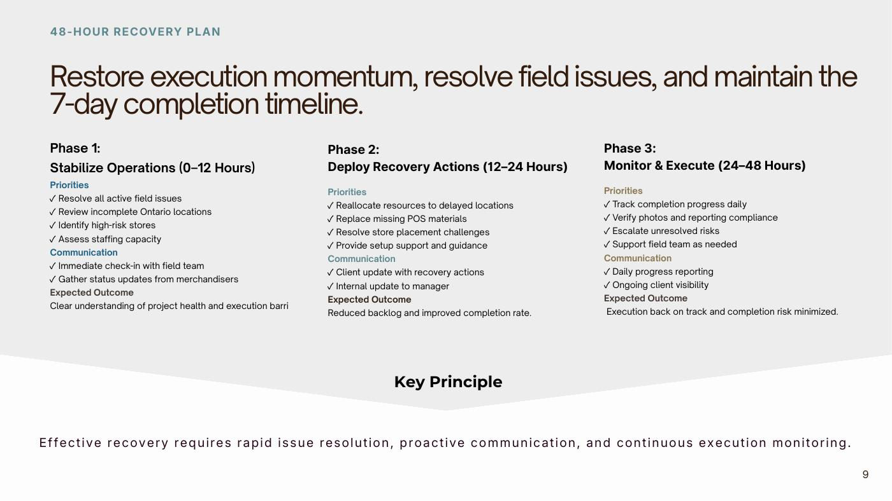
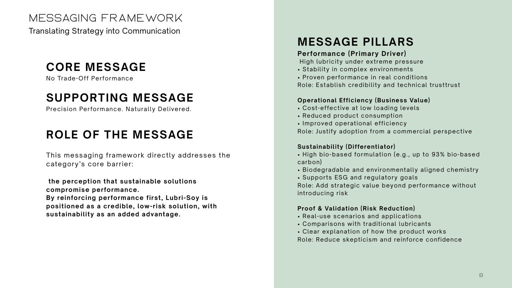
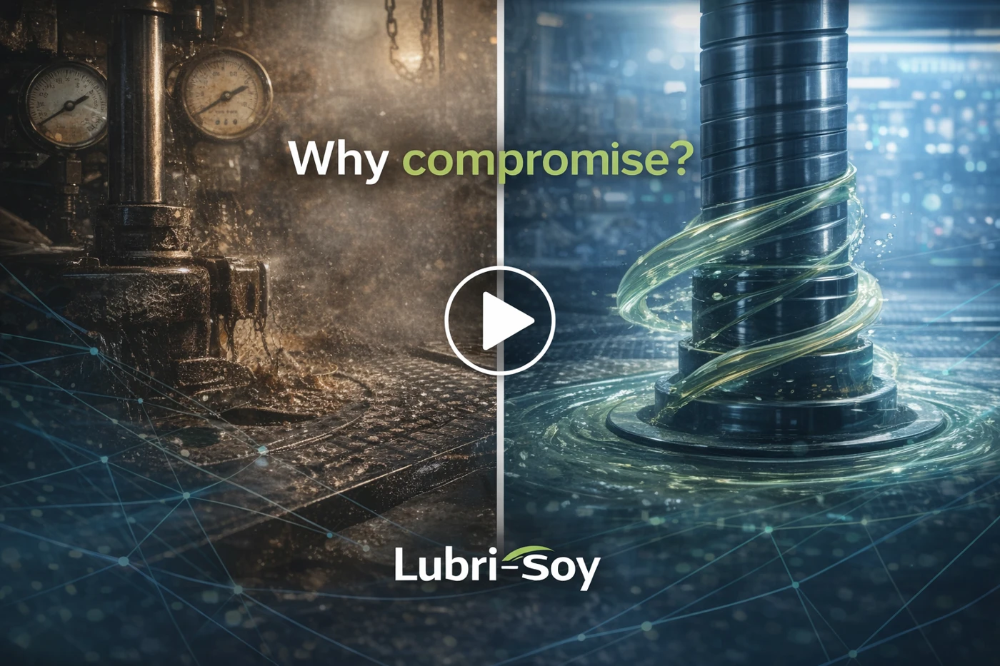
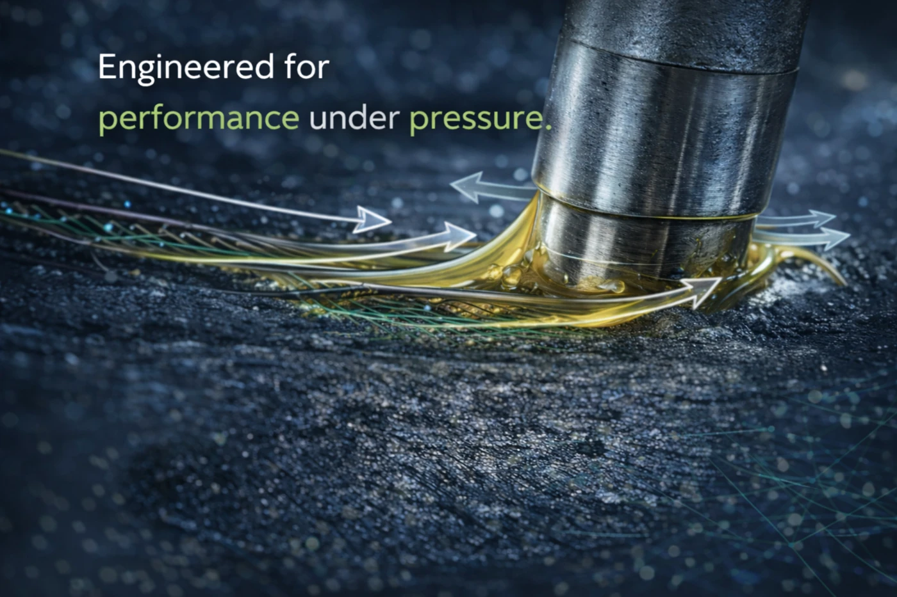
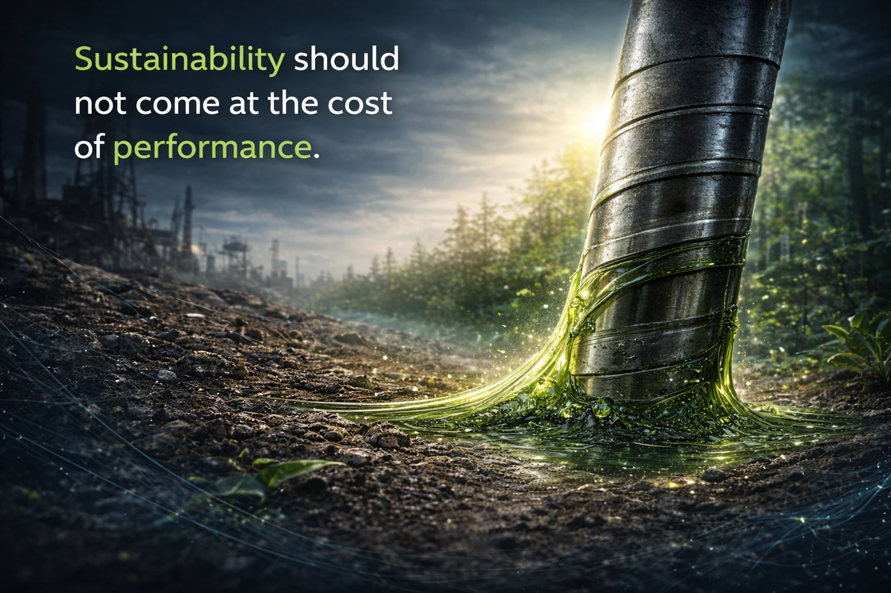
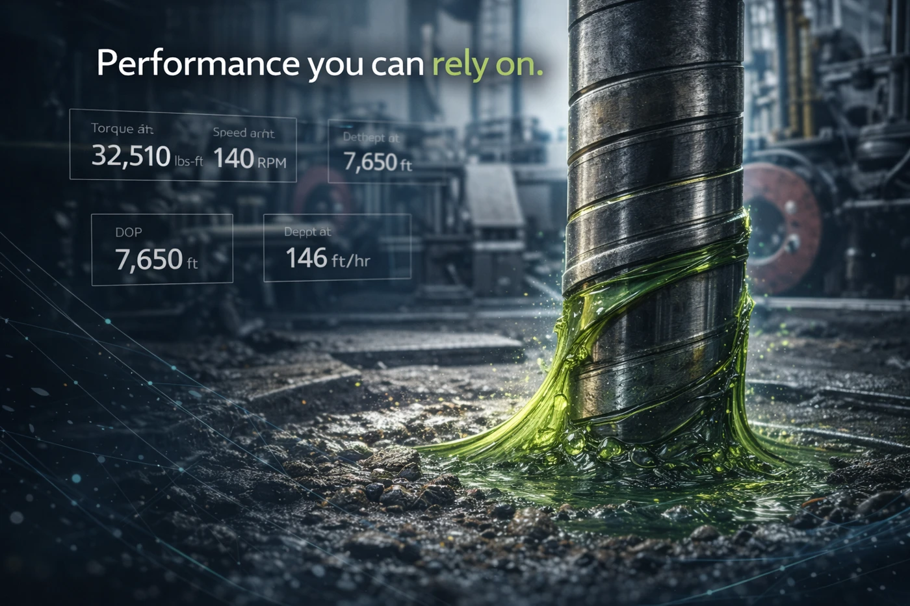
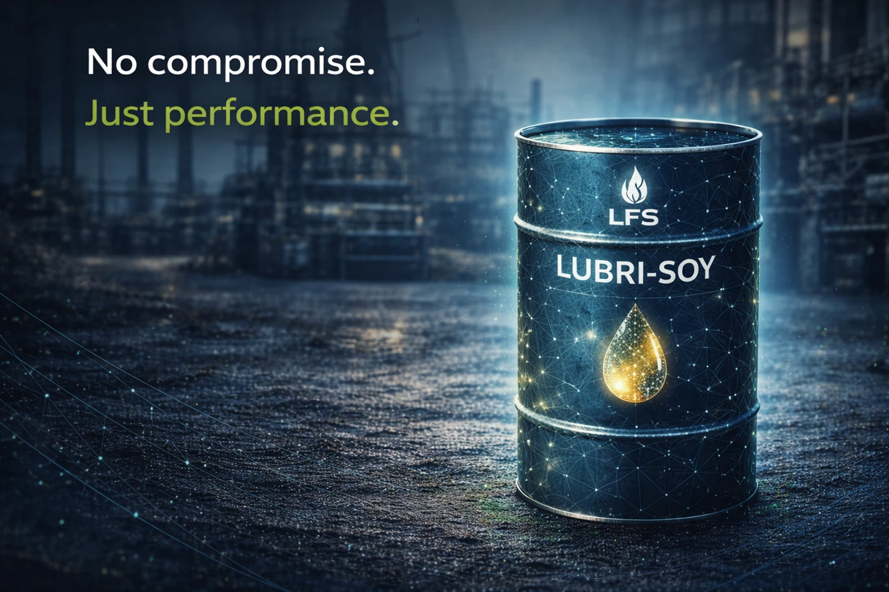
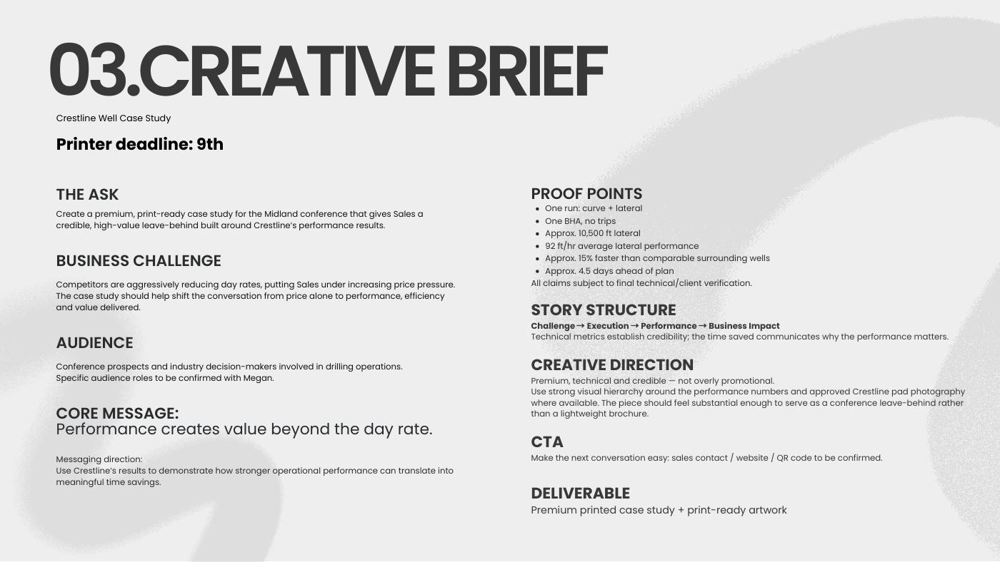

01 · TEASE
Performance shouldn’t be a compromise.
Developed the teaser hook and a cinematic equipment brief to introduce the performance–sustainability tension.
SELECTED PROJECTS
Audience insights, clear messaging, and practical execution plans.
A selection of strategy proposals and skills assessments showing how I connect business challenges with audience insights, campaign messaging, stakeholder communication, and execution.
01 · RETAIL EXECUTION · SKILLS ASSESSMENT
The challenge: A simulated 120-store beverage display program faced staffing delays, missing signage, store refusals, and inconsistent reporting on day three of a seven-day rollout.
My approach: Prioritized field blockers and delayed locations, drafted client communications, and built a phased 48-hour recovery plan with staffing, escalation, and quality-control actions.

02 · B2B PRODUCT LAUNCH · STRATEGY PROPOSAL
The challenge: Introduce a bio-based lubricant to a technical B2B audience that prioritizes proven performance and operational reliability.
My approach: Built a performance-first positioning strategy around the audience’s perceived risk, supported by messaging pillars, creative direction, and a staged launch journey.
Campaign targets in the deck are proposed KPIs, not measured results.
View Campaign Strategy View in Canva
Developed an eight-post journey from initial curiosity to product consideration. For each concept, I defined the communication objective, audience hook, caption, visual brief, and proposed call to action, keeping the performance-first message consistent across the campaign.
Concept mockups for a proposed campaign. Play symbols indicate planned video concepts; visuals and data overlays are illustrative.
01 · TEASE
Developed the teaser hook and a cinematic equipment brief to introduce the performance–sustainability tension.
02 · TEASE
Framed the message around operational risk, using pressure gauges and a restrained industrial visual direction.
03 · REVEAL
Introduced the product through a soft-reveal concept, connecting precision cues with the performance-first message.

04 · REVEAL
Briefed a split-screen comparison to challenge the assumed trade-off between performance and sustainability.

05 · EDUCATE
Planned a mechanism-led visual with fluid movement and simple arrows to make the technical story easier to understand.

06 · EDUCATE
Combined industrial and natural cues to make sustainability a supporting benefit within the performance story.

07 · PROVE
Developed a proof-oriented concept with illustrative data overlays to reinforce the intended reliability message.

08 · CONVERT
Created a product-led closing concept with a clear invitation to request information or contact the sales team.
03 · SALES ENABLEMENT · SKILLS ASSESSMENT
The challenge: Plan a conference-ready case study that helps Sales communicate operational value in a market under pricing pressure.
My approach: Turned the client scenario into a recap, a production timeline, and a creative brief, working backward from the printer deadline and keeping additional requests in separate workstreams.
Technical figures belong to the assessment scenario and require client verification before external use.
View Case Study Plan View in Canva